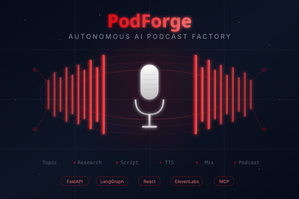
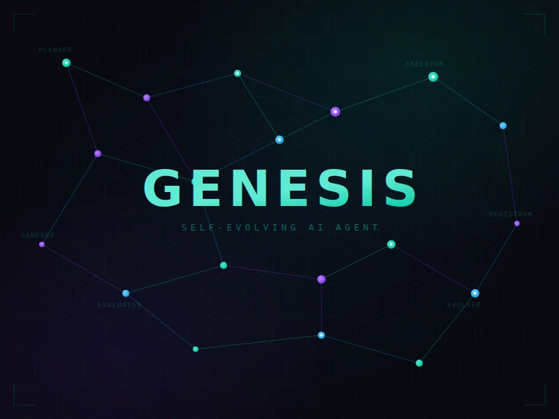
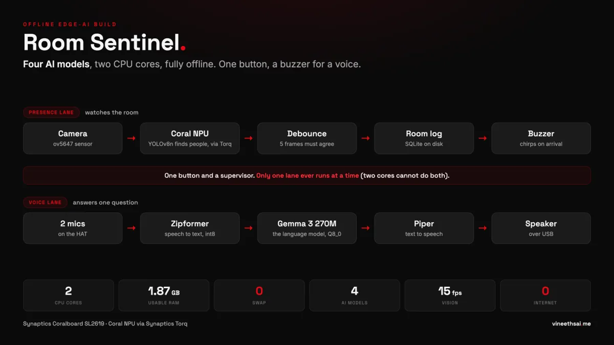

Room Sentinel
Vision, speech, a local LLM and a voice on one 2-core board, fully offline. The whole interface is one button and a buzzer.
AI Engineer at AT&T, based in San Francisco
AI/ML Engineer, applied researcher, and someone who connects dots across astrophysics, philosophy, and sports. I build agentic systems and multimodal pipelines by day and explore the cosmos by night.
Things I've built. Agents, RAG systems, voice pipelines, and the occasional machine that should not work but does.
Vision, speech, a local LLM and a voice on one 2-core board, fully offline. The whole interface is one button and a buzzer.
What moves an offline ARC-AGI-3 agent, and how to tell. Paper, code and a write-up from ARC Prize 2026.
A pull request gate for ML training code that checks the math, not the diff. Built at Vultr Agent Arena.

Give it a topic, get a podcast with multi-character dialogue, music and sound effects.

In this research project, I am focusing on adapting diffusion-based generative models to produce art that captures the unique characteristics of a specific artistic domain. By training on a curated dataset of art images, the model can learn style, color, and compositional patterns relevant to different art movements or media. The ultimate goal is to generate high-fidelity, style-consistent art while minimizing overfitting to the source domain.
Technical Details:
The foundation of this project leverages latent diffusion models (e.g., Stable Diffusion) as they enable high-quality image synthesis by operating in a compressed latent space. Specifically, a U-Net architecture with cross-attention layers processes latent representations, conditioned on textual or semantic prompts. For domain adaptation, I employ LoRA (Low-Rank Adaptation), which injects a small number of trainable parameters into the model's existing layers. This significantly reduces the GPU memory footprint and training time compared to full fine-tuning, making it ideal for iterative experimentation.
During training, the model receives text prompts describing the desired style or thematic elements of the art. Classifier-free guidance is utilized to balance creativity and fidelity, ensuring that generated art remains faithful to domain-specific styles (e.g., impressionism, surrealism, or modern digital art) without sacrificing originality. Data augmentation techniques, including random cropping, color jitter, and style-preserving transformations, enhance model robustness.
I also explore advanced sampling methods (e.g., DDIM or DPM++ solvers) to optimize inference quality and speed. Quantitative evaluation relies on metrics like FID (Fréchet Inception Distance) and KID (Kernel Inception Distance) to gauge image quality, while a separate user study measures subjective preferences for style accuracy. To accommodate large-scale experiments, I leverage PyTorch Distributed Data Parallel (DDP) on multi-GPU setups, maintaining version control for model checkpoints and hyperparameter configurations.
Technologies: Diffusion-Based Generative Models, LoRA, PyTorch, Hugging Face Transformers, DDP, Classifier-Free Guidance, Advanced Sampling Methods (DDIM, DPM++), Data Augmentation, Latent Spaces.
Keywords: Diffusion Models, Fine-Tuning, Domain Adaptation, Generative Art, LoRA, Latent Diffusion, Style Transfer, FID, Multi-GPU Training.
In this project, I focused on mitigating adversarial effects in cyber-physical systems, particularly in robot programming. By integrating audit logging and machine learning techniques, the system ensures secure and reliable programming environments. My work involves using advanced algorithms to detect anomalies or adversarial behaviors that may compromise system integrity. Through robust audit logging mechanisms, this solution safeguards systems from attacks, providing real-time feedback to avoid disruptions during robot programming.
Technical Details: The machine learning models utilized in this project include a combination of spiking neural networks (SNNs) and Graph Neural Networks (GNNs) to accurately model the dependencies within the robot programming tasks. SNNs, which are inspired by biological neurons, offer real-time capabilities suited for event-driven tasks in cyber-physical systems. Adversarial training is applied using PGD (Projected Gradient Descent) to create adversarial examples during training, enhancing the model's resilience against real-world attacks. Additionally, the audit logging system integrates blockchain technology to ensure tamper-proof logs and secure storage, making it highly suitable for IoT-driven and real-time environments.
Technologies: Machine Learning, Audit Logging, Cybersecurity, Robot Programming, SNNs, GNNs, Blockchain.
Keywords: Adversarial ML, Cyber-Physical Systems, Secure Robot Programming, Spiking Neural Networks, Blockchain.
This project aims to revolutionize how software release notes are classified and prioritized. I developed a system to automatically categorize release notes based on keywords and contextual importance using state-of-the-art deep learning models. The system then ranks these updates in terms of priority and suggests important upgrades to users, ensuring critical updates are handled promptly. Additionally, the project includes a recommendation engine powered by advanced neural networks to further optimize the user experience.
Technical Details: The classification system is built on BERT (Bidirectional Encoder Representations from Transformers) for its ability to understand contextual semantics. Additionally, T5 (Text-to-Text Transfer Transformer) is used for sequence-to-sequence tasks, allowing for more nuanced categorization and summarization of release notes. For the recommendation engine, Neural Collaborative Filtering (NCF) with Variational Autoencoders (VAEs) is employed, enabling the system to personalize upgrade suggestions based on historical user behavior and priorities. The pipeline is optimized using Hugging Face's Transformers library and parallelized using PyTorch's DDP (Distributed Data Parallel) framework to scale on multi-GPU environments.
Technologies: Deep Learning, Natural Language Processing (NLP), Neural Networks, BERT, T5, VAEs, NCF, PyTorch DDP.
Keywords: Text Classification, Release Management, Deep Learning, Priority Ranking, Transformers, Neural Collaborative Filtering.
The Virtual TA is an intelligent assistant designed to help students with course-related queries. By integrating an open-source large language model (LLM) for security, I fine-tuned the model on lecture videos, notes, and other course materials from the professor. The system performs Retrieval-Augmented Generation (RAG) to answer student questions accurately and contextually. This project provides a secure, scalable solution to enhance student learning outside classroom hours.
Technical Details: The core of this system is a fine-tuned LLaMA 2 model, optimized for educational tasks using LoRA (Low-Rank Adaptation) for efficient and memory-friendly fine-tuning. The retrieval mechanism employs Faiss (Facebook AI Similarity Search) to efficiently handle large document corpora for semantic search. The RAG framework leverages both Dense Passage Retrieval (DPR) and Generative Transformers, allowing the model to pull accurate information from a knowledge base and generate coherent, context-specific answers. Security is ensured through differential privacy mechanisms and homomorphic encryption, safeguarding sensitive academic content while maintaining robust model performance.
Technologies: LLM, Retrieval-Augmented Generation (RAG), LLaMA 2, LoRA, Faiss, DPR, Transformers, Differential Privacy.
Keywords: Virtual Assistant, Educational Technology, Open-Source LLM, Fine-Tuning, Dense Passage Retrieval.
In this research project, I analyze exoplanetary data to understand the characteristics of planets orbiting distant stars. The analysis is based on light dimming patterns observed when a planet passes in front of its host star. By calculating the extent of dimming and the star's rotational speed, I estimate the exoplanet's size, gravity, and other characteristics. This project contributes to the scientific understanding of exoplanets and their potential habitability.
Technical Details: This project uses convolutional neural networks (CNNs) in combination with recurrent neural networks (RNNs) to process time-series photometric data collected from space telescopes like Kepler and TESS. The model architecture includes a hybrid CNN-RNN design, where CNNs handle spatial dependencies while LSTMs (Long Short-Term Memory networks) capture temporal patterns in the light curves. Bayesian optimization is employed to fine-tune model hyperparameters, ensuring high accuracy in detecting minute fluctuations in starlight. The project also incorporates Gaussian Processes for uncertainty quantification in exoplanet detection, providing probabilistic estimates of planet size and orbital characteristics.
Technologies: CNN, RNN, LSTMs, Bayesian Optimization, Gaussian Processes, Kepler, TESS.
Keywords: Exoplanets, Astronomy, Planetary Analysis, CNNs, RNNs, Bayesian Optimization, Gaussian Processes.
Since June 2026 I've had 272 pull requests merged into 22 repositories. Most fix the same shape of bug: nothing raises, a number is just wrong.
got53must be9
norm_typeDeepSpeed's clip_grad_norm_ squared every per-tensor norm, so only the default p=2 came out right. On gradients [3, -4] and [2] with p=1 it returned 53. DeepSpeed itself passes p=2, so direct callers were exposed, for 933 days.
got0.000must be4.773
DeepSpeed's Muon path cast to fp16 before normalizing, so a large but finite gradient overflowed and the whole matrix collapsed. With gradients scaled 10,000x, the output was all zeros.
gotNaNmust be0
In sentence-transformers' GOR loss, a single-input batch divided zero by zero. That happens whenever an epoch ends on a leftover sample, and the logged loss then stayed NaN for the rest of the run.
| Project | Merged pull requests |
|---|---|
| Unsloth | 158 |
| DeepSpeed | 29 |
| sentence-transformers | 28 |
| Ray | 9 |
| vLLM | 6 |
| PyTorch | 5 |
| Axolotl | 5 |
| Datasets | 4 |
| Accelerate | 3 |
| LiteLLM | 3 |
| PEFT | 2 |
| PyTorch Lightning | 2 |
| MLX | 1 |
Another 17 landed in tablib, pandera, Pint, Babel, Pygments, tomlkit, cattrs and schema. Unsloth counts its core and zoo repositories together. PyTorch lands pull requests through its own bot, so GitHub lists those 5 as closed. Counted on GitHub, November 24, 2026. See every merged pull request
Build logs and teardowns. Long form, and honest about the failures.

Running four AI models on a 2-core board, fully offline Vision, speech, a local LLM, and a voice. The whole interface is one button and a buzzer. A teardown of a real machine that can only speak in sound.Hey there! I'm Vineeth. AI/ML Engineer, applied researcher, and someone who takes curiosity seriously. Professionally, I build agentic systems, RAG architectures, and multimodal pipelines. On the research side, I care about post-training correctness: finding and fixing the quiet math bugs in the libraries that train language models.
What makes me tick goes way beyond code. I'm captivated by astrophysics and the mysteries of the cosmos, grounded by philosophy (from Zarathustra to Meditations), and energized by sports in all forms: F1 for the tactics, football for the passion, tennis for the craft, with basketball and cricket always in the rotation.
I'm a fixture at SF hackathons, a relentless explorer of emerging tech, and someone who genuinely believes the best ideas come from connecting dots across disciplines. Pull up a chair, let's chat.
03/2026 - Present
AI agent pipelines for sales and business use cases such as proposal generation and sales intelligence: LangGraph workflows, GraphRAG retrieval and evaluation against ground truth.
05/2025 - 01/2026
Core work on Agentspace (now Gemini Enterprise): agents and fine-tuning pipelines for LLM data labeling, agentic RAG for image and text classification, and a question and answer extraction system for research teams.
01/2025 - 05/2025
Fine-tuned diffusion models on art data and built RAG systems and agentic workflows, including a fintech chatbot shipped in Docker.
08/2022 - 04/2023
Document processing pipelines with Hough Lines Transform, YOLOv5, Lilt, BERT, RoBERTa and LayoutLM v3.
04/2021 - 07/2021
Led product development using WordPress, Webflow, Discord, and Notion; managed AWS EC2 and integrated marketing tools.
05/2024 - 08/2024
Spiking neural network object detection for space use on the Akida neuromorphic processor, with QuantizeML and CNN2SNN.
02/2024 - 05/2024
Multi-cloud speech-to-text for clinical use (Google Cloud, Azure, Amazon Transcribe) and its backend services.
05/2022 - 09/2022
Medical image segmentation with U-Net and radiomic features with PyRadiomics.
08/2023 - 05/2025
Focus on Advanced ML/Deep Learning, NLP, Data Engineering, and Statistics.
2018 - 2022
Data Structures and Algorithms, Analysis of Algorithms, Operating Systems, Computer Architecture, Computer Networks, Databases, OOP, Software Engineering, Machine Learning, Data Mining, AI, Cloud Computing and Cyber Security.
08/2024 - 05/2025
Conducting research in ML for cyber-physical security, release note classification, Virtual TA using RAG, exoplanet discovery, and multimodal RAG.
08/2024 - 12/2024
Facilitated seminars on Math for Data Science, ML, and Databases; provided mentoring and comprehensive grading.
06/2024 - 08/2024
Taught Python, NumPy, Pandas, and various ML models through interactive, hands-on sessions.
05/2024 - 07/2024
Mentored students in neural networks, model optimization, and deployment while leading interactive workshops.
03/2024 - 05/2025
Organizes high-impact events including Data Science Connect, hands-on workshops on building agentic workflows, and engaging meetups with outstanding turnout.
01/2019 - 04/2021
Built and led a coding community by organizing seminars, workshops, and competitions focused on data structures and algorithms.
Loading the universe
Every sphere is a passion. Pick one to go deeper. The red core at the center holds the thread that ties all of them together.
Drag to orbit · Click a sphere · Scroll to zoom
From the roar of a football stadium to the precision of an F1 pit stop, from the elegance of a tennis rally to the cosmic dance of galaxies billions of light-years away, my world is a collision of passions that somehow all connect. I live at the intersection of technology and wonder: building AI systems by day, pondering the philosophy of consciousness by night, and cheering for the beautiful game whenever the whistle blows. Whether it is debugging a neural network, tracing the trajectory of a cricket ball, or reading Marcus Aurelius on a quiet evening, every pursuit feeds the same curiosity. A relentless drive to understand how things work, from the smallest quark to the largest supercluster.
The books that shaped me and the sports that move me. Each one opens an essay.
I'm an AI engineer at AT&T, based in San Francisco. I like hard problems, honest writing, and people who are curious about how things work.